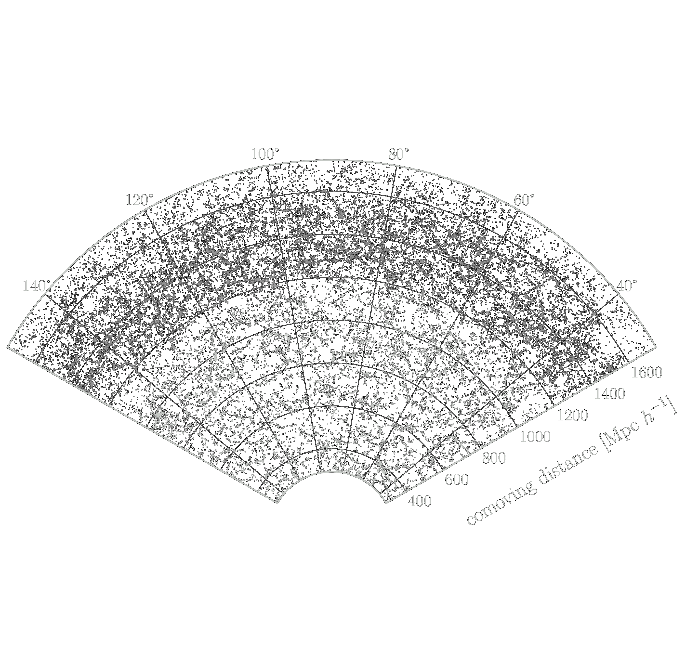
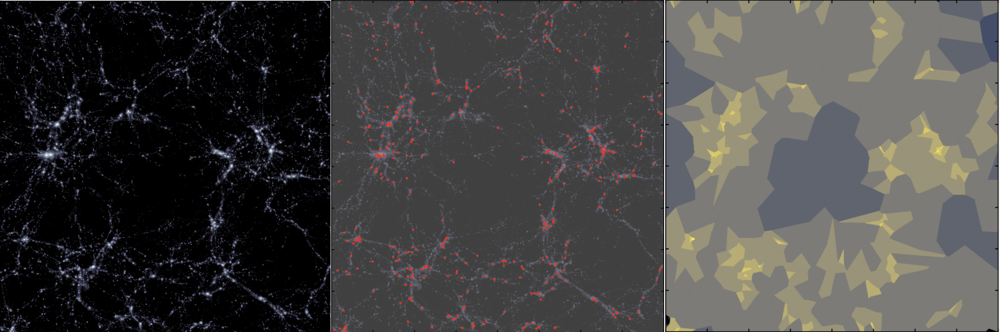

SDSS / Tomographic analysis
Density reconstruction: SDSS tomographic clustering
Space for the reconstruction method, sample definition and measurements of clustering across tomographic redshift slices.
Research / Clustering observables
Galaxy positions trace the underlying matter field. Clustering statistics and reconstruction methods let us extract that information from wide-area surveys.

SDSS / Tomographic analysis
Space for the reconstruction method, sample definition and measurements of clustering across tomographic redshift slices.

Density field
This section can hold the workflow, validation plots and interpretation of the reconstructed density field.